Skin Rendering
Table of Contents
- 皮肤医学结构
- 2007 Gem3Skin
- 2009 Efficient rendering of local subsurface scattering
- 2011 Pre-Intergrating the Effects of Scattering
- Improve Pre-Intergrating
- CLX2 Skin
- 2009 ScreenSpace Perceptual Rendering of Human Skin
- 2010 Real-Time Realistic Skin Translucency
- TODO 2015 Separable-SSS
- 2018 Unity Efficient screen space subsurface scattering
- Misc
- 参考资料
Skin Rendering note.
<!– more –>
皮肤医学结构
皮肤分为 表皮 epidermis，真皮 dermis 和皮下组织 subcutaneous tissue
表皮的分层
角质层 Stratum corneum
位于表皮的最外层，由 5-20 层的扁平无核细胞组成，胞内细胞器结构消失，充满角蛋白。
透明层 Stratum lucidum
仅见于掌跖。由 2-3 层扁平无核细胞组成。
颗粒层 Stratum granulosum
由 2-4 层梭形细胞组成，细胞内含有透明角质颗粒。
棘层 Stratum spinosum
由 4-10 层多角形细胞组成，细胞间桥明显呈棘状。
基底层 Stratum basale
位于表皮的最下层，为一层立方形或圆柱状细胞，细胞的长轴与基底膜带垂直，胞核呈卵圆形，胞浆内含有黑素颗粒，核分裂象常见。
具有不断分裂增殖的能力，因此又称为生发层。由基底层移行至颗粒层最上层约需 14 天，再移行至角质层表面脱落又需 14 天，称为表皮通过时间。


2007 Gem3Skin
- 原文链接 Advanced Techniques for Realistic Real-Time Skin Rendering https://developer.nvidia.com/gpugems/GPUGems3/gpugems3_ch14.html
下图是使用 2 个 Gaussian 函数，4个 Gaussian 函数来近似 Dipole 模型推导出的 绿光在大理石中散射的 diffuse profile：

下图使用 6 个高斯函数来近似 Diffusion profile。rgb 三个通道都是用相同的这 6 个高斯函数，但是对应的高斯函数的权重不同。

实现总结
高光
高光使用了基于物理的 BRDF，为了加速计算，对 BRDF 进行了预计算。
float PHBeckmann(float nDotH, float roughness) { float alpha = acos(nDotH); float ta = tan(alpha); float r2 = roughness * roughness; float val = 1.0 / (r2*pow(nDotH, 4.0))*exp(-(ta*ta) / r2); return 0.5*pow(val, 0.1); }
Diffuse
计算 RhodtTexture
uv.u 为 NoL
uv.v 为 roughness
计算 BRDF 在半球空间的积分，得到所有被反射的比例，从而就可以得到剩余的被散射的比例。
计算 IrradianceTexture
在贴图空间，计算被散射的能量。渲染模型，结果按照模型 UV 输出（这就是所谓的贴图空间渲染）。
v2f vert (appdata v) { v2f o; #if UNITY_UV_STARTS_AT_TOP o.pos = float4((v.uv0 * 2 - 1)*float2(1,-1), 0, 1); #else o.pos = float4(v.uv0 * 2 - 1, 0, 1); #endif o.tex = v.uv0; o.posWorld = mul(unity_ObjectToWorld, v.vertex); o.eyeVec.xyz = _WorldSpaceCameraPos - o.posWorld.xyz; return o; }
计算 StretchCorrectionTexture
在贴图空间，矫正贴图空间的模糊(曲率比较大的地方，相邻点的空间距离比其贴图上的距离要小)
// 同样是在贴图空间进行计算，得到贴图被拉伸的程度(其实也是模型本身的曲率) fixed4 frag (v2f i) : SV_Target { float3 posWorld = i.posWorld; float3 derivU = ddx(posWorld); float3 derivV = ddy(posWorld); float stretchU = 1 / length(derivU) * _StretchScale; float stretchV = 1 / length(derivV) * _StretchScale; return float4(stretchU, stretchV, 0, 1); }
计算 SeamMaskTexture
使用(0,0,0,0) clear StretchTextureRT，生成 StretchTexture 时 alpha 始终填充 1，这样接缝外的 alpha 就会为 0。
在贴图空间，将所有 StretchTexture 的 alpha 通道相乘就可以得到 SeamMask。
对 StretchTexture 和 IrradianceTexture 进行模糊
在贴图空间，对 IrradianceTexture 进行高斯模糊来模拟散射。一共使用 6 个高斯函数，RGB 通道使用不同的权重。6个高斯函数近似 multi-dipole profiles
2D Blur to 1D Blur

高斯模糊近似 R(d)函数
R(d)r = 0.078*G(sqrt(7.41), d) + 0.358*G(sqrt(1.99), d) + 0.113*G(sqrt(7.41), d) + 0.118*G(sqrt(0.358), d) + 0.100*G(sqrt(0.0484), d) + 0.233*G(sqrt(0.0064), d);


下面文件为一维高斯函数图形：
./SkinRendering/002_gaussian_function.ggb
代码实现
// 在贴图空间，先对StretchTexture进行模糊，然后再对IrradianceTexture进行模糊 fixed4 frag (v2f i) : SV_Target { float scale = _MainTex_TexelSize.x * _GaussianWidth / _BlurStepScale; float2 uvDelta = float2(scale, 0.0); #if defined(CONV_V) uvDelta.xy = uvDelta.yx; #if defined(ENABLE_STRETCH_CORRECTION) uvDelta.y *= tex2D(_StretchTex, i.uv).y; #endif #else #if defined(ENABLE_STRETCH_CORRECTION) uvDelta.x *= tex2D(_StretchTex, i.uv).x; #endif #endif float2 coords = i.uv - uvDelta*3.0; float4 sum = 0.0; // 期望为0，标准差为1 的高斯函数离散的函数值 float curve[7] = { 0.006, 0.061, 0.242, 0.383, 0.242, 0.061, 0.006 }; for (int j = 0; j < 7; j++) { float4 tap = tex2D(_MainTex, coords); sum += curve[j] * tap; coords += uvDelta; } return sum; }
Translucent Shadow Maps
- 生成 TSM
从光源方向渲染模型（设置 ViewProjection 矩阵为 LightVP），将模型的 depth 和 uv 写入到 TSM RenderTarget。 - 读取 TSM
渲染模型时，将模型的 worldPos 转化到光源投影空间（LightVP * worldPos）得到 lightProjPos，利用 lightProjPos.xy/lightProjPos.w 就可以对上一步生成的 TSM 进行采样。此时得到的数据为模型当前渲染的点沿光照方向的背侧的点。如下图： 应用 TSM
得到背侧点的 uv 和 depth 后，使用 uv 采样 IrradianceTexture 可得到背侧点的散射能量。利用这些信息计算出从背侧散射到当前点的能量。

参考资料
- Advanced Techniques for Realistic Real-Time Skin Rendering https://developer.nvidia.com/gpugems/GPUGems3/gpugems3_ch14.html
- 角色渲染技术——皮肤 https://zhuanlan.zhihu.com/p/27014447
- GPU Gems 3 真实感皮肤渲染技术总结 https://zhuanlan.zhihu.com/p/42433792
高斯卷积核求解
- 如何通俗易懂地解释卷积？ https://www.zhihu.com/question/22298352
- Gaussian filter, or Gaussian blur http://www.librow.com/articles/article-9
- 高斯函数 https://www.zhihu.com/question/33214189
- 理解图像卷积操作的意义 https://blog.csdn.net/chaipp0607/article/details/72236892?locationNum=9&fps=1
- 高斯卷积核计算器 http://dev.theomader.com/gaussian-kernel-calculator/
- 将 2D 卷积核转化为 1D https://blogs.mathworks.com/steve/2006/11/28/separable-convolution-part-2/
- 2D GaussianBlur To 1D https://stackoverflow.com/questions/25216834/converting-2d-mask-to-1d-in-gaussian-blur
2009 Efficient rendering of local subsurface scattering
该方法是屏幕空间的方法。对于当前的 skin pixel p，使用重要性采样生成一系列样本 pi（这些样本的 Irradiance 会散射到 p），利用蒙特卡洛积分来计算次表面散射。

2011 Pre-Intergrating the Effects of Scattering
Pre-integrating the Effect of Scattering
我们没有通过收集渲染位置处所有方向的入射光来实现次表面散射。而是探索预积分皮肤中的次表面散射效果。
只有三件事情会引入可见的散射：
- 模型曲率的变化
- normal map 中的突起
- 遮挡光导致的阴影
Scattering and Diffuse Light
nDotL 是主要导致入射光变化的原因，其使得散射变得明显。
我们考虑通过球谐光照模拟所有方向上的光，以此来预计算表面上任意一点的散射光效果。但是球谐方式只能高效地表示低频率变化的光，对于高频变化的光需要很多系数。因此，我们放弃了预计算散射效果，而选择预计算表面形状子集的散射衰减，并在渲染时确定最好的衰减.
我们在运行时可以计算表面的曲率，其最大程度决定了光滑表面的散射效果。
为了测量曲面上的散射，我们添加了曲率作为第二个参数。我们简单从一个方向照射给定曲率的球面，并测量各个角度上累计的光照。
下图为散射光公式推导：

当前模型假设所有的皮肤和球相似，但是皮肤可以为任意拓扑结构。换句话说，当前模型假设给定点的散射由该点自身的曲率决定，而事实上是由该点周围所有点的曲率决定。因此，该模型在平滑的表面上(曲率变化不大的表面上)效果可以，但是曲率变化比较大时，就不适用了。幸运的是，大多数皮肤模型都有两层：使用几何表示光滑的表面，使用 normal map 表示表面细节。
- 如何简明地解释曲率（curvature）？ https://www.zhihu.com/question/25952605
Scattering and Normal Maps
皮肤上小的皱纹、毛孔通常通过 normal map 来表示。因为小折痕的法线总是要回到表面主法线方向，从小折痕反射的散射光和折痕更宽的不散射表面反射的光看起来很像。因此可以通过模糊 normal 来近似皱纹、毛孔等小褶皱照成的散射。对于不同波长的光，diffusion profiles 不同，模糊 normal 的方式也不同。
从实际的物体抓取 normal 贴图时，发现 normal 会向表面法线偏转，而且不同波长的光偏转程度不同，红光比绿光偏转程度大。还观察到使用多个波长的光抓取的多个 normal 进行渲染要比使用单个 normal 效果要好。
我们的做法为，假定原始的 normal map 是精确的表面法线，对其进行 blur 而得到每个波长对应的 normal。因此，不能为了得到更光滑的效果，而直接提供 blur 过的 normal map 做原始的 normal map，否则再对其进行 blur 得到的每个波长的 normal 将不正确。
使用 diffusion profile 直接对 normal map 进行 blur 是不可行的，因为光照对于表面法线不是线性过程。需要使用 LEAN 或 CLEAN。
值得注意的是，在法线贴图的过滤区域内，阴影/入射光/散射光项为常数时，使用非归一化的 normal 是一个可行的近似，此时我们有如下关系式：

上面关系式不是总成立的，因为 diffuse lighting 包含一个自阴影项 max(0, N.L)来取代上式中的 N.L。尽管如此，当法线过滤区域内都没阴影或都有阴影时，使用非归一化的法线依然是正确的。
我们开发了一种近似的方法，其只用一张包含 mipmap 的法线贴图。使用该优化方法时，specular normal 的采样依然不变，但同时使用另一个采样器采样高一级的 mipmap 得到 red normal。然后将 specular normal 和 red normal 变换到 tangent 空间，对他们进行混合得到 green 和 blue normal。最后的 diffuse-lighting 计算需要执行三次（red-diffuse blue-diffuse green-diffuse）。
如果法线贴图只包含很小的细节，甚至可以使用几何法线来代替 red normal。
Shadow Scattering
光散射到阴影是真实感皮肤的重要特性之一。使用一点小技巧就可以预计算阴影边界上的散射效果。
我们可以将阴影映射算法当作一个衰减函数。当衰减为完全黑或完全白，对应着完全遮挡和完全不遮挡。我们可以重新设置完全黑和完全白之间的值。特别地，如果我们确定我们的阴影过滤器创建的半影尺寸足够容纳大部分的 diffusion profile，我们可以缩小原始半影的尺寸，多出来的尺寸用于基于 diffusion profile 的散射。

为了计算精确的衰减，我们将阴影半影和 diffusion profile 进行预积分。我们将阴影半影 P()定义为一个一维衰减函数，该函数来自于使用阴影贴图映射的 blur kernel 对硬阴影边界的过滤。假定阴影映射的 kernel 为单调递减的，则对应的衰减函数也是单调递减，这样就可以对阴影半影 P()求反函数 \(P^{-1}()\) 。这样就可以通过给定的阴影值获得对应的半影中的位置。例如，如果阴影映射为 BoxFilter，则阴影半影函数 P()就是一个线性的斜坡，此时对应的反函数 \(P^{-1}()\) 也是一个线性的斜坡。
我们假定了阴影是投射在一个平面上的，如果表面倾斜度很大，半影尺寸将比我们预计算时使用的值大很多。因此，我们为阴影衰减贴图增加了第二个维度，其表示世界空间中的半影尺寸。最后，我们生成阴影 LUT 的公式如下：

半影宽度可以通过表面和对应光源的夹角得到，或者直接对阴影值进行求导。
当半影被拉升映射到倾斜度很高的表面时，此时提供的散射衰减空间更大。可以对半影宽度值进行截取，以保证其在 LUT 贴图范围内。
Improve Pre-Intergrating
2013 Env Light Pre-Intergrating Scattering
- 将皮肤次表面散射系数转化为 SH 系数
- 计算 SH 环境光时，用 LightSH 系数*ScatterSH 系数就得到此表面散射后的环境光
原理如下推导：

Tips：计算间接光照的 diffuse 部分时，会传入当前顶点的世界坐标系下的法线 wNormal，需要将 S(θ,r)的+z 方向和 wNormal 对齐。也就是上图中给 Rl 乘了一个变换系数得到了 Rl‘。
如何理解需要通过卷积来计算 S(θ,r) 对应 SH 基函数的系数？
形式化的证明：
形式化的证明需要类比于泰勒展开的证明。即可以证明一个函数可以由多个基函数线性叠加，然后，证明基函数的系数为原函数和基函数的卷积。
在 《数学物理方法》 书中有描述，Spherical Harmonics 是在球坐标系下求解 Laplace 方程时，进行变量分解后（分解为角度部分和半径部分），角度部分的解。如此发现了球谐函数。
TODO
直观的理解：
也可以进行直观的理解，卷积的离散形式就是以过滤器函数为权重对被积函数求和。假设过滤器函数的离散值为 g0, g1, g2, g3，被积分函数的离散值为 f1, f2, f3, f4。则最终的结果为：
g0*f0 + g1*f1 + g2*f2 + g3*f3
这和两个向量的点积形式完全一样。因此，S(θ,r)和 SH 基函数卷积其实就是将 S(θ,r) 投影到 SH 基函数，卷积得到的值就是对应 SH 基函数的系数。
Approximate Pre-Intergrating Scattering
CLX2 Skin
BRDF
Fresnel
F 的计算中，将 5 次方转化为了 exp2 操作，来优化性能。
有些 GPU 通过表查找来实现 exp2，exp2 只需要 1 条指令。
float3 F = specColor + saturate(50 * specColor.g - specColor)*exp2((-5.55473*VoH - 6.98316)*VoH);
- 粗略判断 Shader 每条代码的成本 https://zhuanlan.zhihu.com/p/34629262
- Fresnel Equations, Schlick Approximation, Metals, and Dielectrics http://psgraphics.blogspot.com/2020/03/fresnel-equations-schlick-approximation.html
D
GGX 法线分布。使用两个粗糙度输入计算两个法线分布，最终的 D 项为 D1*1.5 + D2*0.5，因为 G 中的分母为 0.25（本应该为 0.5），所以此处 D1 和 D2 缩放因子的和为 2。
Crystal 中 D 项为 D1+D2。
- D1 使用的是未缩放的粗糙度
- D2 使用了缩放后的粗糙度
roughness 没用执行平方操作(即：需将 perceptualRoughness 转化为公式中使用的 roughness)
G
G 项和 SmithJointApprox 类似，但是系数不同。
Refract Light
// normal 为顶点法线光栅化插值的结果 (低频法线) float3 RefractionNoL = saturate(0.6 + dot(normal, light.dir)); // attenuation 为mainLight的阴影项 float3 RefractionIrradiance = light.color * thickness * _SSSColor * RefractionNoL * RefractionNoL * attenuation;
SSS
// SSS1 直接使用 NoL对 SSSLUT进行采样得到的值 // SSS2 对阴影边界散射的处理，SSS强度越大，阴影边界变化曲线越趋近抛物线 // DoL 为法线贴图中存储的法线（高频法线）与mainLight的点积 float LutUV2 = attenuation + (DoL-NoL) * attenuation; float3 SSS_Lut2 = float3(lerp(sqrt(LutUV2.r), LutUV2.r, 1 - _SSSIntensity), LutUV2.rr); SSS_Lut2 *= SSS_Lut2;

2009 ScreenSpace Perceptual Rendering of Human Skin
实现细节
Blur Kernel width
Blur Kernel width 需要考虑下面两个情况
- 远处的物体应该使用窄的 kernel
- depth map 中梯度变化大的也需要使用窄的 kernel
使用下面的公式来实现：

从上面公式可以看到，深度梯度增加会减小 kenel 宽度；这就限制了背景像素和 skin 像素进行卷积。在物体的边界处，深度梯度会很大，kernel 宽度就会很小。
上面公式中的α值受下面一些因素影响：
- 物体在 3D 空间中的尺寸
- 摄像机的 FOV
- viewport size
下图展示了α和β分别变化对最终渲染结果的影响：

float4 BlurPS(PassV2P input, uniform float2 step) : SV_TARGET { // Gaussian weights for the six samples around the current pixel: // -3 -2 -1 +1 +2 +3 float w[6] = { 0.006, 0.061, 0.242, 0.242, 0.061, 0.006 }; float o[6] = { -1.0, -0.6667, -0.3333, 0.3333, 0.6667, 1.0 }; // Fetch color and linear depth for current pixel: float4 colorM = colorTex.Sample(PointSampler, input.texcoord); float depthM = depthTex.Sample(PointSampler, input.texcoord); // Accumulate center sample, multiplying it with its gaussian weight: float4 colorBlurred = colorM; colorBlurred.rgb *= 0.382; // Calculate the step that we will use to fetch the surrounding pixels, // where "step" is: // step = sssStrength * gaussianWidth * pixelSize * dir // The closer the pixel, the stronger the effect needs to be, hence // the factor 1.0 / depthM. float2 finalStep = colorM.a * step / depthM; // Accumulate the other samples: [unroll] for (int i = 0; i < 6; i++) { // Fetch color and depth for current sample: float2 offset = input.texcoord + o[i] * finalStep; float3 color = colorTex.SampleLevel(LinearSampler, offset, 0).rgb; float depth = depthTex.SampleLevel(PointSampler, offset, 0); // If the difference in depth is huge, we lerp color back to "colorM": float s = min(0.0125 * correction * abs(depthM - depth), 1.0); color = lerp(color, colorM.rgb, s); // Accumulate: colorBlurred.rgb += w[i] * color; } // The result will be alpha blended with current buffer by using specific // RGB weights. For more details, I refer you to the GPU Pro chapter :) return colorBlurred; }
渲染流程和贴图空间 SSS 的对比


缺陷

- 特定配置下会产生小的光晕、光环 例如，上图第一幅图鼻子和阴影接壤的地方。这是因为屏幕空间中相邻的像素在三维空间中可能并不相邻导致的。
- 该算法没有考虑薄的、曲率高的地方的一些特性。 例如上图第二副图中的耳朵部位，上图第三幅图为使用 TSSSS 渲染的结果，其通过修改 Translucent Shadow Map 考虑了薄部位的特性。
2010 Real-Time Realistic Skin Translucency
算法基于下面 4 点观察
- 对于很多物体，我们可以对当前点的法线取反来近似背面点的法线。当正面和背面平行时，该近似是准确的。
- 从背面照亮物体，我们从正面看时，观察者无法获得背面辐射照度的准确信息。
- 材质的自由程很小或者几何体适度的厚时（例如：皮肤），透射是非常低频的现象。这是因为光经过物体内部时被散射，将光的大多数高频信息给消去了。
- 对于人类皮肤，在表面上 albedo 不会有非常明显的变化，其维持在相似的皮肤色调上。
基于上面 4 点观察，算法做出如下 3 点假设
- 对正面法线取反来近似背面法线。 (基于观察 1)
- 利用某种启发式方法我们可以预测背面的 Irradiance，并且很难注意到预测结果和真实结果的不同。 (基于观察 2)
- 我们可以使用正面的 albedo 近似计算背面的 irradiance。（基于观察 2，4）
即使我们使用高频法线来计算背面的 Irradiance，我们依然得到的是低频的透射光，因此我们假设可以使用低频法线得到近似的结果。我们使用顶点法线来计算背面的 Irradiance，而不是 normal map 中存储的法线，这样就可以舍去 Irradiance 的高频部分。此时，背面的 Irradiance 变化非常小，因此可以取单个值来近似整个卷积。(基于假设 3)
公式推导

实现细节
尽管使用取反的 Normal 来计算透射率避免了双重贡献（相对于两次都使用不取反 Normal 进行计算）。但是，使用取反 Normal 导致反射照亮区域和只受透射照亮的区域之间的过度不平滑。在过度区域，N.L 和 -N.L 都为 0。为了避免突然的照明变化，我们通过下面方式扩大透射照亮的区域：

float distance(float3 posW, float3 normalW, int i) { // Shrink the position to avoid artifacts on the silhouette: posW = posW - 0.005 * normalW; // Transform to light space: float4 posL = mul(float4(posW, 1.0), lights[i].viewproj); // Fetch depth from the shadow map: // (Depth from shadow maps is expected to be linear) float d1 = shwmaps[i].Sample(sampler, posL.xy / posL.w); float d2 = posL.z; // Calculate the difference: return abs(d1 - d2); } float3 T(float s) { return float3(0.233, 0.455, 0.649) * exp(-s*s/0.0064) + float3(0.1, 0.336, 0.344) * exp(-s*s/0.0484) + float3(0.118, 0.198, 0.0) * exp(-s*s/0.187) + float3(0.113, 0.007, 0.007) * exp(-s*s/0.567) + float3(0.358, 0.004, 0.0) * exp(-s*s/1.99) + float3(0.078, 0.0, 0.0) * exp(-s*s/7.41); } float s = scale * distance(pos, Nvertex, i); float E = max(0.3 + dot(-Nvertex, L), 0.0); float3 transmittance = T(s) * lights[i].color * attenuation * albedo.rgb * E; // We add the contribution of this light M += transmittance + reflectance;
TODO 2015 Separable-SSS
该论文提到出了两类方法，都只需要两个 1D 的卷积操作。第一类可以得出高质量的模拟效果，第二类则在效果和易操作性上做了权衡。
论文发现，可以精确模拟 diffusion 的 kernels 通常在数学上是不可分离的，但是可以使用 low-rank factorization(低秩分解)来重建。下图展示了对模拟皮肤次表面散射的 diffuse reflectance profile 进行奇异值分解后，奇异值的衰减情况。从图可以看出，只有和前几个奇异值相关的分量对 profile 的重建有明显贡献。这使得低秩近似是可行的。

2018 Unity Efficient screen space subsurface scattering
Problems with Separable Subsurface Scattering
- Gaussian 卷积核是可分的，因此比其他卷积核效率高（需要采样的数量比较少）。
但是，只有在一个平面上才可分。 - Bilateral filtering 使得卷积变为假的的可分(pseudo-separabel)。
只是结果看起来可以，但并不完全正确。 - 两个 Gaussian 混合得到的函数显然是不可分的。只能执行 4 个 Pass 来实现。
为两个 Gaussian 卷积核执行 4 个 Pass 在实践上消耗还是太高了
下图展示了不同方法对 MC 结果逼近程度的比较：
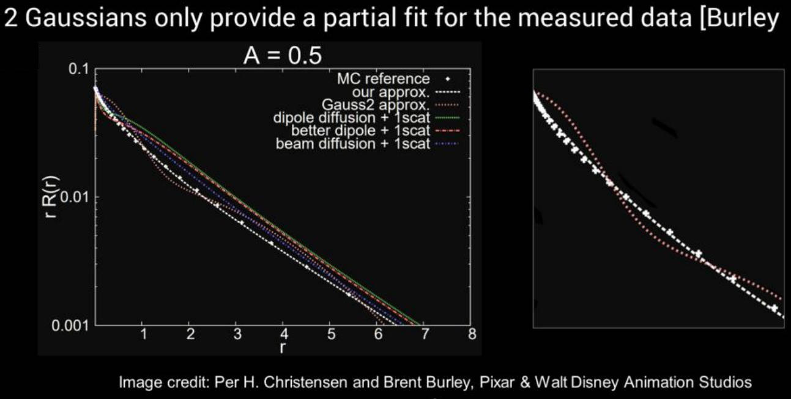
单个高斯函数的能够相对准确地近似多次散射，但即使是两个高斯函数的混合也难以准确表示单次和多次散射的组合。在上图片，可以看到白色表示参考结果，红色表示双高斯近似。
- 混合的高斯对艺术家来说太不友好了。
高斯只是个数学概念。
艺术家被强制只能使用测量数据或人眼拟合确定的数据。
调节参数有 7 个自由度，太多了
有很多参数的组合是没有意义的
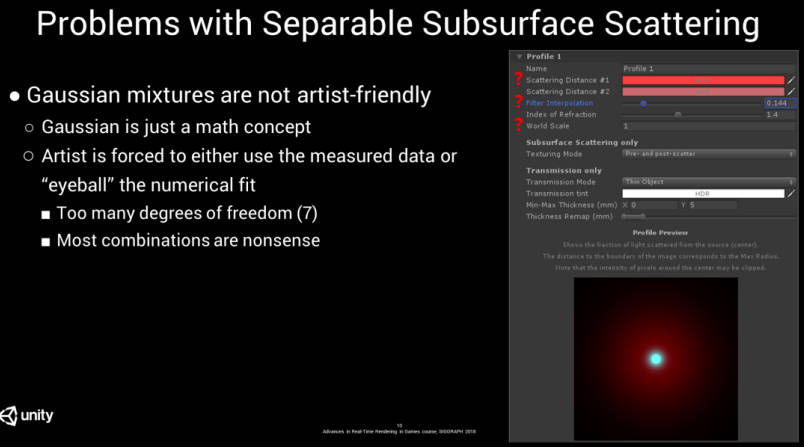
通过实现高斯混合模型，我们遇到了另一个问题 - 它并不适合艺术家使用。高斯函数只是一个数学概念，在 SSS 的背景下没有物理意义。当你有两个高斯函数和一个 lerp 参数时，这就是 7 个自由度，如何设置它们使得最终的组合有意义并不是很清楚。值得注意的是，熟练的艺术家仍然可以通过高斯混合模型获得出色的结果。但是，这可能是一个冗长复杂的过程，不适合 Unity。
Burley's Normalized Diffusion Model
- Burley's Normalized Diffusion Model 也被称为 “Disney SSS” （A.k.a: also known as）
- 该模型对 MC 数据拟合非常好
- 概念模型考虑了参与介质中的单次和多次散射
我们实现了 Burley 的归一化扩散模型，我们称之为 Disney SSS。它能够准确地匹配使用蒙特卡洛模拟获得的参考数据。因此，自然地，它能够同时考虑单次和多次散射。
关于单次散射和多次散射，可以参考下图（该图来自 ./AtmosphericScattering.html#orga025a62 ）理解：

下图展示了该模型函数图像和对应的画面效果：
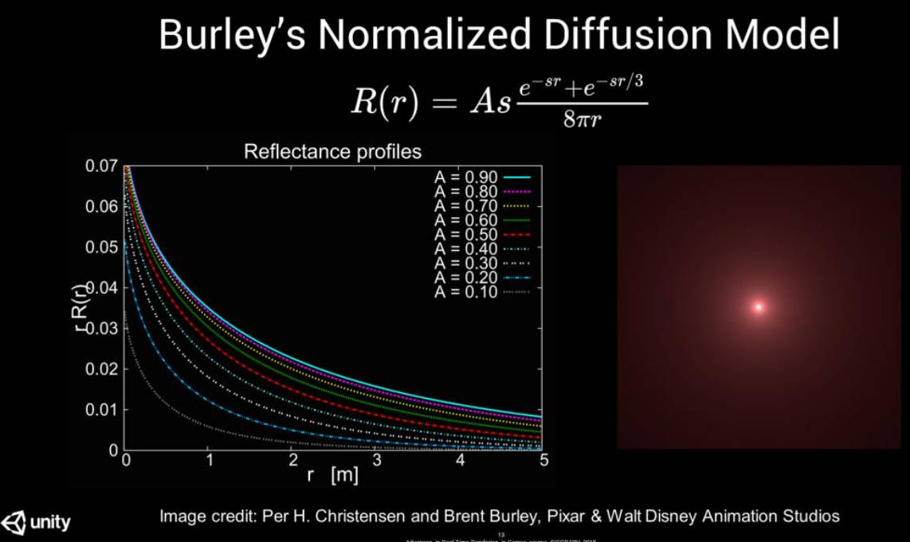
该模型只有两个参数：体积反照率 A 和形状参数 s。两个参数都可以被解释为颜色。形状参数与散射距离成反比，这也是我们在用户界面中暴露的参数。
如果我们观察结果曲线，就会发现两件事情：
- 尖峰和长尾无法用单个高斯函数来建模。
- 最终的滤波器明显是不可分离的。
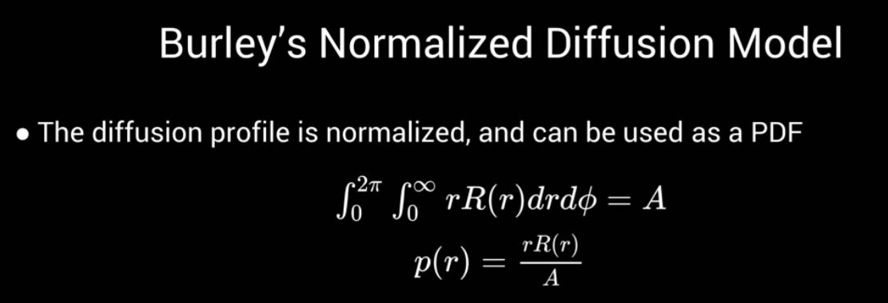
该 diffusion profile 是归一化的，可以直接用作概率密度函数（简称 PDF）。对于蒙特卡洛积分来说，这是一个很有用的特性，我们稍后会看到。
Implementing Subsurface Scattering
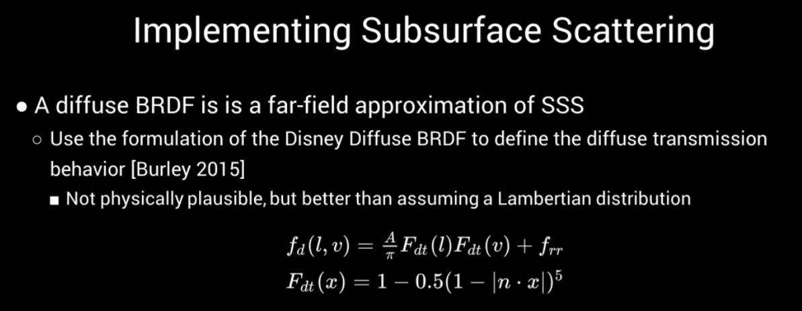
漫反射 BRDF 时散射距离在像素的范围内时近似版本的 SSS。这意味着两种着色模型在一定距离后应该具有相同的视觉效果。为了实现这一点，我们使用 Disney 漫反射 BRDF 的公式来定义在电介质边界处的漫反射传输行为（diffuse transmision）。虽然它不完全匹配 GGX 模型定义的传输行为，但仍然比假设 Lambert 分布要好。
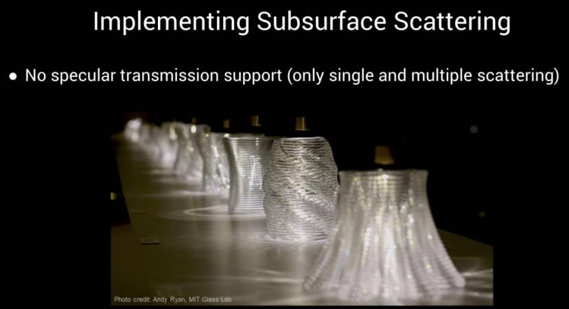
我们不对镜面传输（specular transmission）进行建模，因此我们的模型不能应用于低反照率材质，如玻璃。
注意：
传输（transmission）可能是一个令人困惑的术语。镜面传输是指在光滑电介质界面上的菲涅尔反射。而漫反射传输则是指通过粗糙电介质界面的传输，并且通常假设存在大量的多次散射。通常，这就是 Lambert 项。
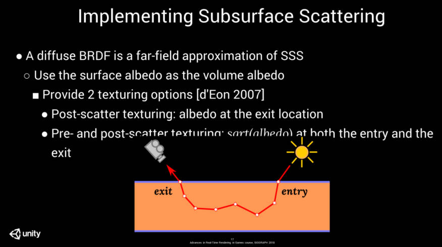
为了保证视觉一致性，我们直接使用表面反照率作为体积反照率。我们提供了两种反照率纹理的选项：
- Post-scatter texturing （后散射纹理）应该在反照率纹理已经包含一些由于 SSS 而导致的颜色渗透时使用。这种情况适用于扫描和照片。在这种模式下，我们只在出射位置应用反照率一次。
- PrePost-scatter texturing(前后散射纹理)会有效地模糊反照率，这可能会导致更柔和、更自然的外观，这在某些情况下是可取的。
下图展示了这两种方式的对比：
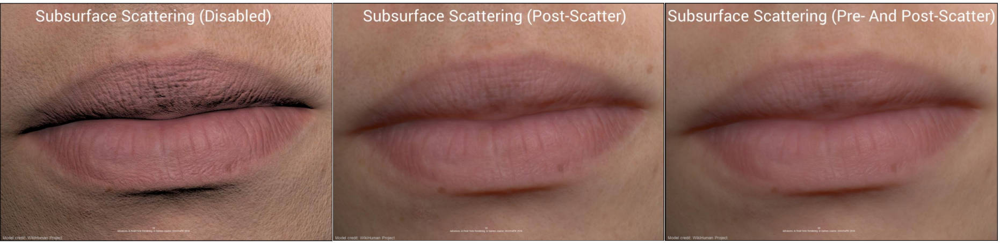
你可能会注意到，后散射选项在保留细节方面做得更好，这是预期的结果。差异很微小，所以我鼓励你稍后在一个好的显示屏上查看幻灯片。
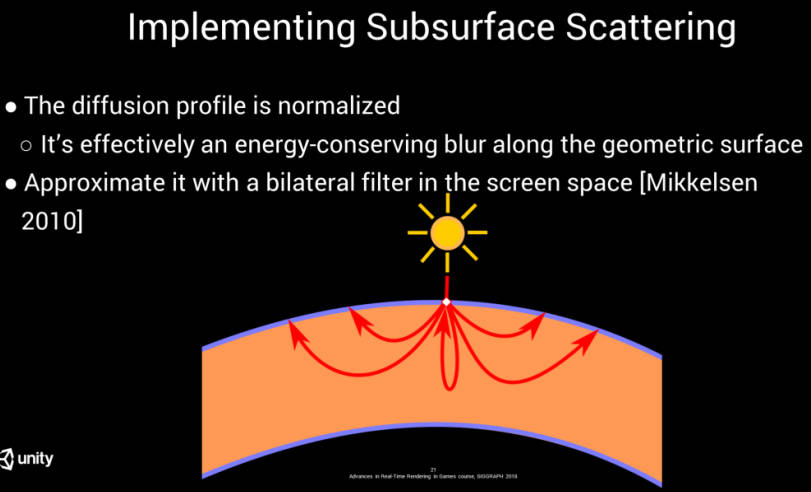
由于 Burley 的 diffusion profiles 是归一化的，因此可以将 SSS 实现为一个能量守恒的模糊滤波器。你可以想象光能从入射点重新分布到周围的表面上.
类似于之前的方法，我们在屏幕空间进行卷积，并利用深度缓冲来考虑表面的几何形状。
Subsurface Scattering Algorithm
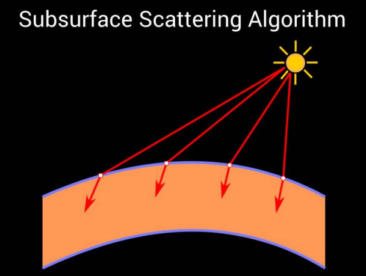
Lighting pass:
计算表面入射点处的入射辐射度(incident radiance)；
从光源方向向表面内部进行 diffuse transmission （漫反射传输)；
根据 texturing mode 应用入射点反照率；
在渲染目标中记录传输的辐射度(radiance)
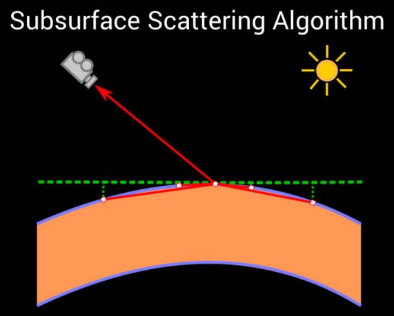
SSS pass:
使用 diffuse profile 对 radiance buffer 进行双边滤波，以在出射点周围模拟扩散效果；
根据 texturing mode 应用出射点反照率；
在表面外部，在视图方向进行 diffuse transmission （漫反射传输）
理想情况下，我们应该直接采样物体的表面，但这对实时应用来说开销太大。相反，我们使用一组在离线预计算的样本，并（概念上）将它们放在一个圆盘上，如上图中的虚线绿线所示。
正如图片所示，这种平面近似并不一定与表面的形状匹配。更糟糕的是，由于将样本从圆盘投影到表面会扭曲距离，投影样本最终会落在不同的分布中。我们需要解决这个问题，但首先我们还是先谈一谈 disk sampling。
注意：上面这种思路基本上是使用光子映射(photon mapping)的 SSS。
Sampling the Diffusion Profile
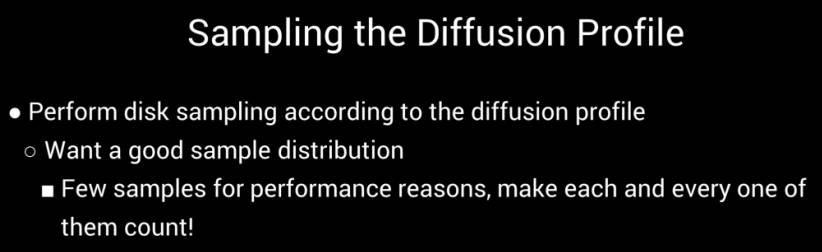
由于性能原因，我们只能采样一小部分样本，因此我们需要确保每个样本都是值得的。
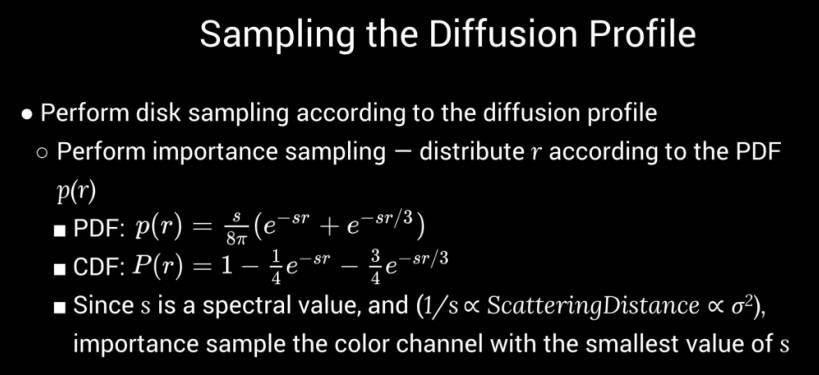
因此，我们采用重要性采样径向距离（radial distances）-我们根据 diffusion profile 的概率密度函数来分布它们。
形状参数 s 是一个光谱值，它与散射距离成反比，而散射距离本身与方差成正比。
由于我们希望最大可能地缩减方差(variance reduction)，我们选择重要性采样对应于最大散射距离的颜色通道（对于皮肤来说，是红色通道）。
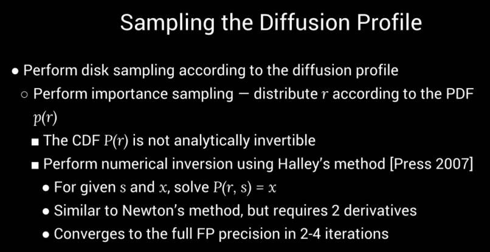
为了重要性采样，需要求累积分布函数（简称 CDF）的反函数。不幸的是，CDF 没有解析反函数，因此我们采用 Halley's 数值计算方法，该方法在实践中非常高效。
Tips:
CDF 是存在解析的反函数的。如下：
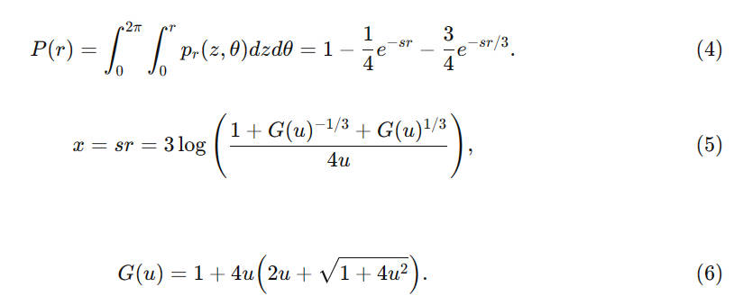
- inverse Burley CDF https://zero-radiance.github.io/post/sampling-diffusion/
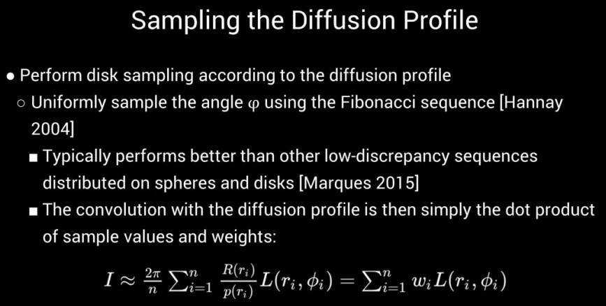
最后，我们使用 Fibonacci sequence 来均匀采样 polar angle。它可以产生良好的球体和圆盘的样本分布，并且在许多情况下都很有用，比如 reflection probe filtering。
我们使用蒙特卡罗积分方法来在 disk 上执行卷积。其实就是样本值和权重的点积。
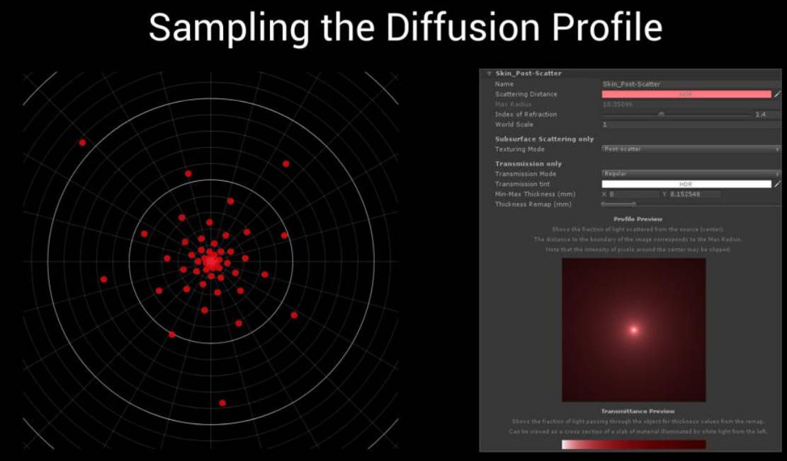
重要性采样过程会产生一个预计算的样本模式，可能会看起来像上图所示。注意，我们在原点附近采样更密集，因为大部分能量都集中在那里。
Bilateral Filtering
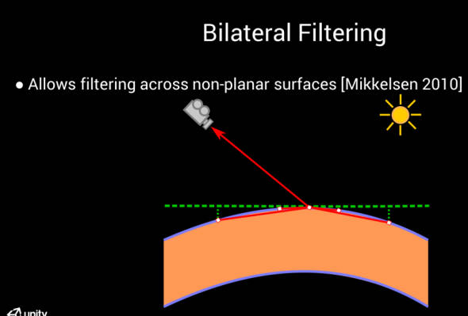
现在我们知道如何预计算样本，前面提到由于将样本从圆盘投影到表面会扭曲距离，接下来解决该问题.
由于表面几何形状与圆盘不对齐，并且我们使用预计算的样本，我们唯一的选择就是以某种方式重新为样本分配权重。这个过程被称为双边滤波。
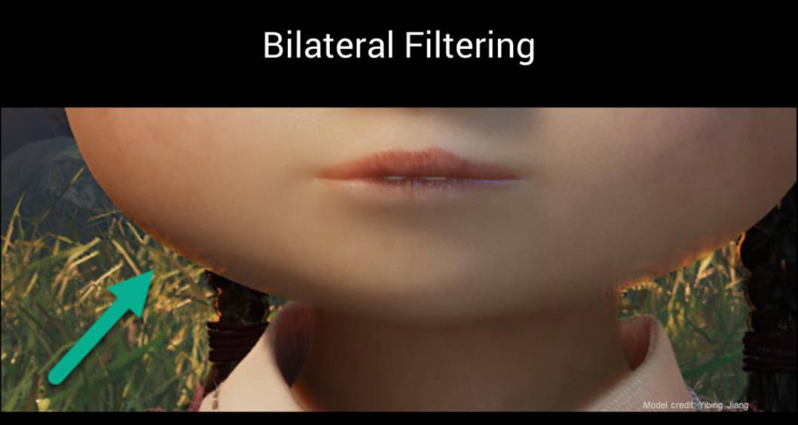
双边滤波使卷积考虑深度。这一点非常重要，不仅可以提高质量，还可以避免背景渗透到前景，反之亦然。如上图所示，没有使用双边滤波，使得背景中的草颜色渗透到了脸上。
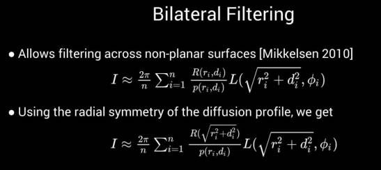
使用蒙特卡罗卷积公式，样本权重被定义为函数值与 PDF 之间的比率。修改函数值很容易-我们只需要使用进入点和出射点之间的欧几里得距离来求解 profile。
注意：为了便于说明，数学上假设是一个直角三角形，因此使用勾股定理。一般来说，你还应该考虑透视扭曲(perspective distortion)[Mikkelsen 2010]。
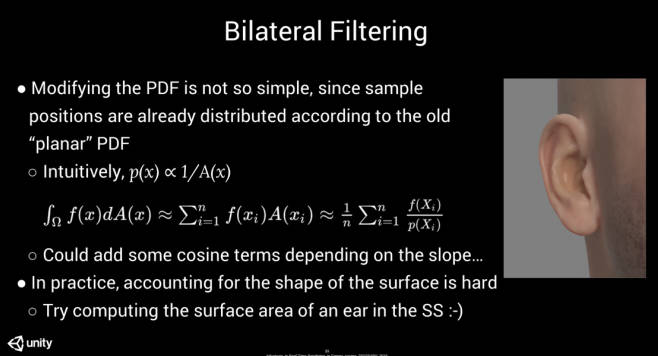
不幸的是，我们不能对 PDF 做同样的处理，因为我们的样本位置已经根据这个旧的“平面” PDF 进行了分布。
如果我们将蒙特卡罗积分的公式与对面积积分的求积公式联系起来，我们可以看到 PDF 值与每个样本关联的面积成反比。但是如何计算这个面积？我们可以对表面做出某些假设，并添加一些余弦因子来考虑斜坡。
然而，以一种通用和健壮（robust）的方式解决这个问题很困难，特别是由于屏幕空间中的信息是有限的。
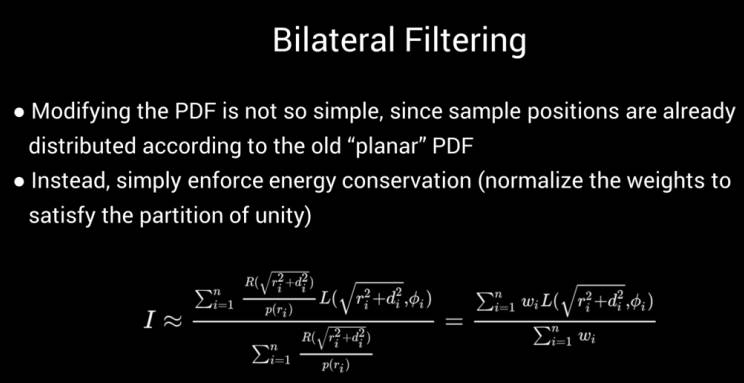
作为替代，我们可以简单地利用我们的滤波器应该是能量守恒的这一事实，将权重归一化为 1。
Orders of Approximation
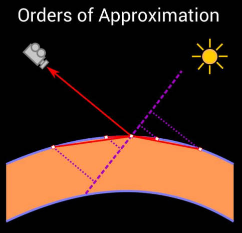
现在我们知道如何在圆盘上进行双边滤波，让我们考虑一下如何放置和定位这个圆盘。
圆盘自然被放置在相机射线与几何体相交的位置，位于世界空间或相机空间。但是圆盘的方向呢？我们有几个选择。
0 阶近似是将圆盘与屏幕平面平行，这直接对应于屏幕空间中的圆盘。这简单快速，但可能会导致几何体在斜角度上的样本分布不佳。
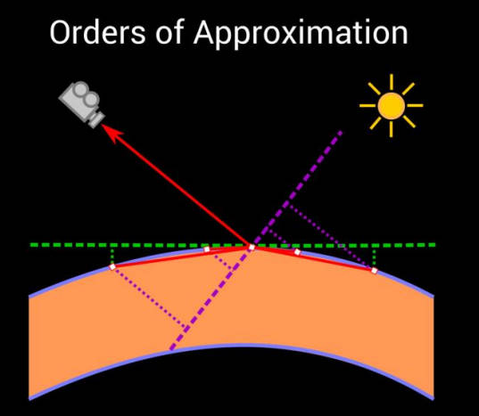
更好的解决方案是将圆盘与表面点邻域的切平面对齐（一阶近似）。这可能很具有挑战性，因为 G-Buffer 通常不包含插值的顶点法线。不幸的是，使用着色法线可能会导致 artifacts，因为它通常与周围表面顶点的法线没有什么共同之处，甚至可能是背面的。
值得注意的是，即使是简单的方法（0阶近似）在实践中也表现很好。
Translucency
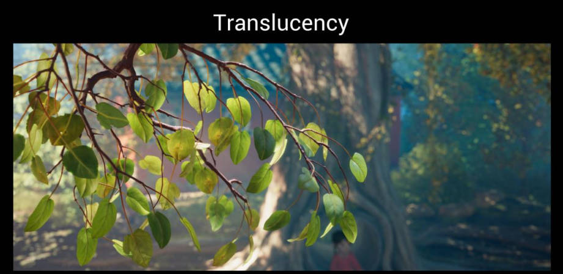
SSS 也负责背光物体的半透明外观。
虽然基本的物理过程完全相同，但出于效率原因，我们以一种更简单的方式来处理这种效果。我们实现了两种不同的方法。第一种方法只适用于薄物体（通常用于植被），第二种方法试图处理更一般的半透明情况。这两种方法之间的主要区别在于几何厚度，这迫使我们以两种不同的方式处理阴影。
Thin Object Translucency
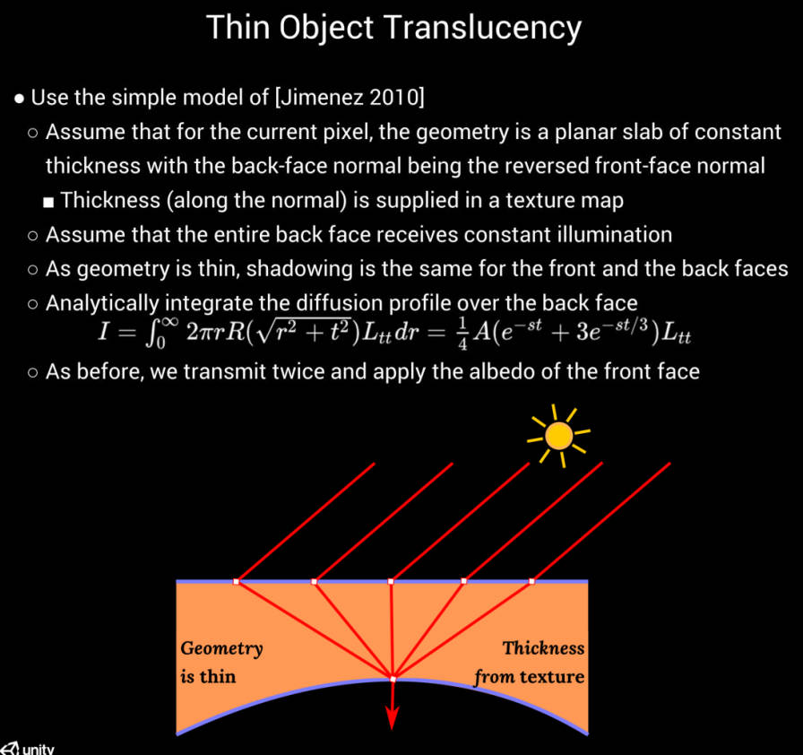
对于薄物体的半透明，我们使用 Jorge Jimenez 提出的简单模型。我们假设对于当前像素，几何体是一个具有恒定厚度的平面板，背面法线是反向的正面法线。厚度由艺术家创作的纹理贴图提供。
此外，我们假设整个背面接收恒定的照明。由于几何体本身很薄，正面和背面的阴影是相同的，因此我们可以共享单个阴影贴图 fetch。
在这种简化的设置下，可以在背面（back face）对 diffusion profile 的贡献进行解析积分。
和之前一样，我们传输两次，并应用 front face 的反照率。
Thick Object Translucency
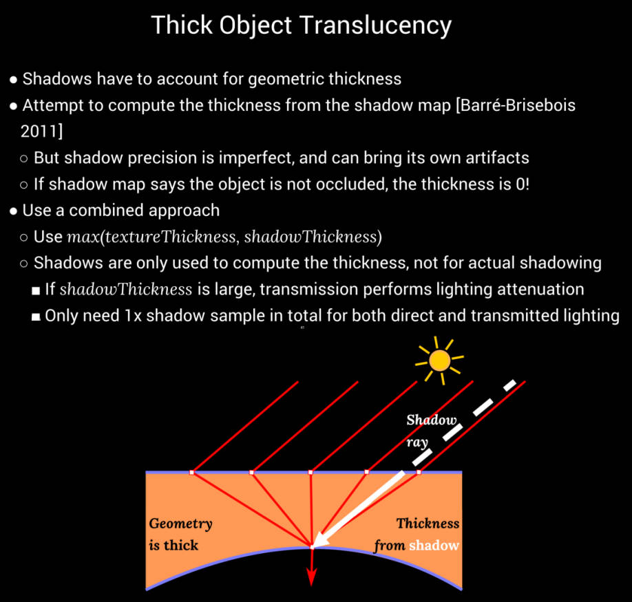
对于较厚的物体，很明显不能重用 front face 的阴影（因为 back face 可能会遮挡 front face）。最初，我们尝试在运行时仅使用阴影贴图给出的最近遮挡物的距离来计算厚度。
很明显，这种方法对于精细的几何特征来说效果不佳，因为阴影贴图的精度有限。
作为替代，我们选择了一种杂合的方法。我们使用两种方法计算厚度，并取最大值，这为艺术家提供了使用“烘焙”厚度纹理来解决阴影映射问题的机会。
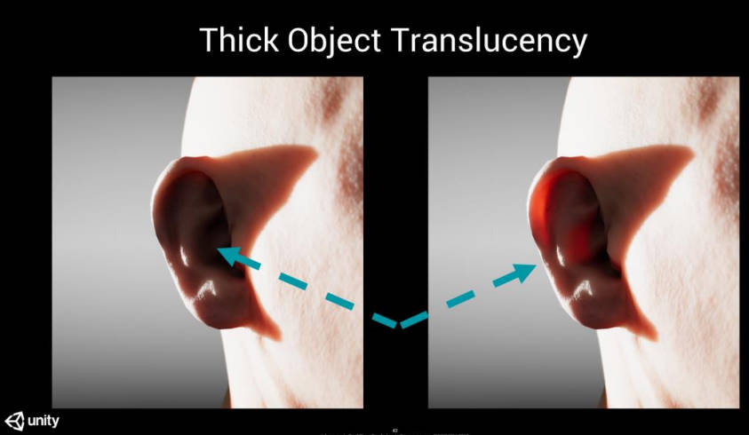
这种方法确实需要一些微调，但是通过一些努力，可以实现合理的结果，如上图。
Optimizations
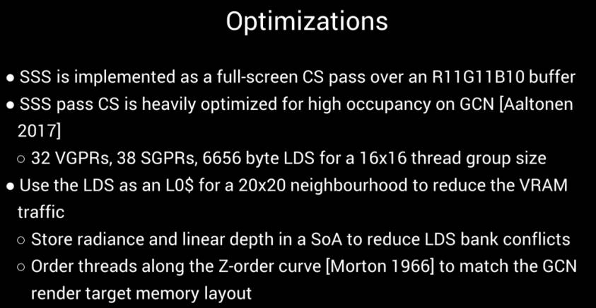
如我之前提到的，我们在离线重要性采样，并在运行时使用一组预计算的样本。SSS 通道本身是作为全屏 compute shader 实现的。
它需要大量带宽，并且大量使用 LDS 来减少和芯片外存储器的数据传输。
- LDS （Local Data Share） ./GPUArchitecture.html#org43b1c85
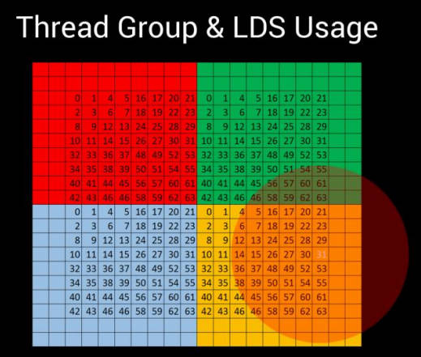
thread group（用数字表示）由 4 个 wavefronts 组成，线程按 Z-order curve 排序，以改善数据访问的局部性。
LDS 缓存（显示为彩色块）包含 radiance 和线性深度值，并具有 2 个纹素的边界，以便每个像素至少有一个小的缓存邻居。
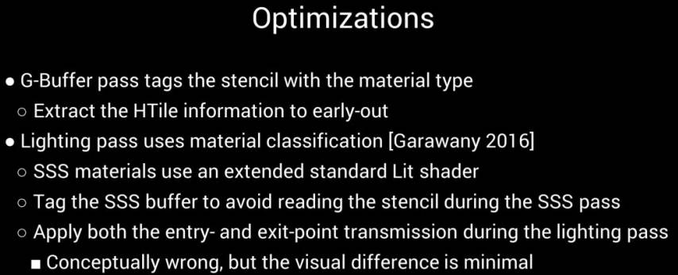
我们在 G-Buffer Pass 期间用材质类型标记模板。这使我们能够创建分层模板表示，并在 SSS Pass 期间 discard 整个像素 tiles。
在 lighting pass 期间，我们还标记 subsurface lighting buffer，以避免在 SSS Pass 期间执行每个像素的模板测试。
我们还在 lighting pass 期间求解两个 transmission events(传输事件)。虽然这在概念上是错误的，但视觉差异非常小，这使我们可以在 SSS Pass 期间避免读取法线缓冲区。
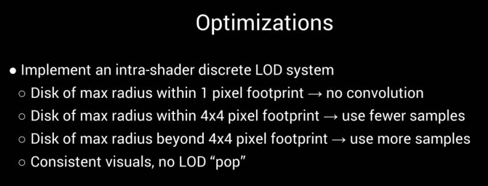
我们还实现了一个基本的 LOD 系统。
我们根据滤波器在 3 个离散步骤中的屏幕空间 footprint 更改样本数量：
我们禁用子像素大小的圆盘的滤波器，对于中等大小，我们使用 21 个样本，否则使用 55 个样本。
视觉效果依然保持一致，LOD 过渡是不可见的。
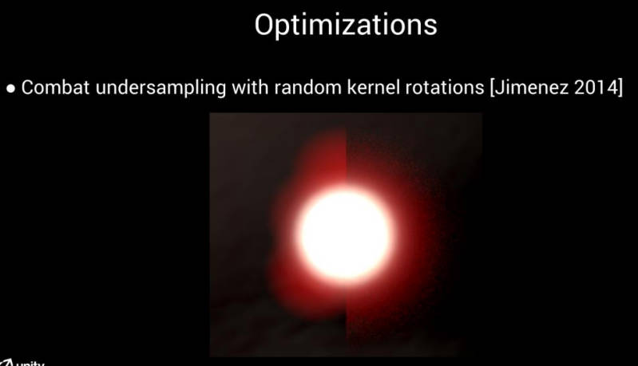
我们还发现随机按像素旋转样本分布很重要。这使我们可以用少量的噪声代替结构化的欠采样 artifacts。
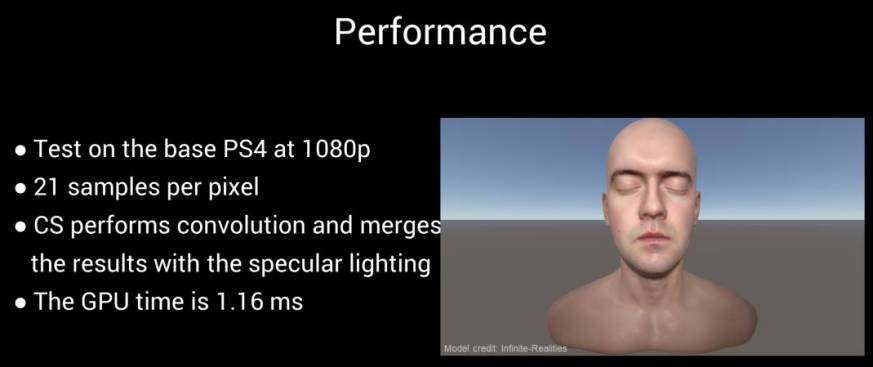
在 PS4 上，我们每个像素限制为 21 个样本。使用你在屏幕上看到的设置(PPT 中没有显示，具体设置信息)，compute shader 执行卷积并合并 diffuse 和 specular lighting buffers 需要 1.16 毫秒。
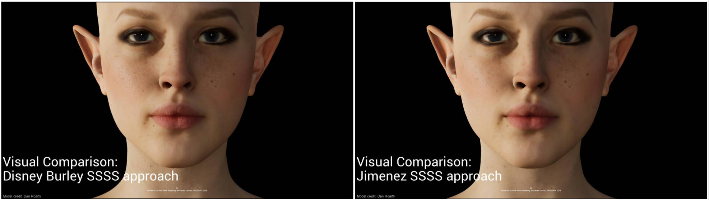
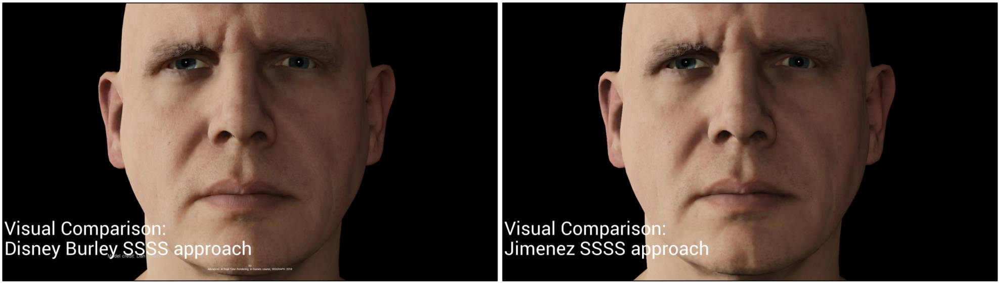
Disney 模型的主要优点是更清晰的视觉效果，即使在相同的散射距离下也可以保留更多的法线贴图细节。
Limitation
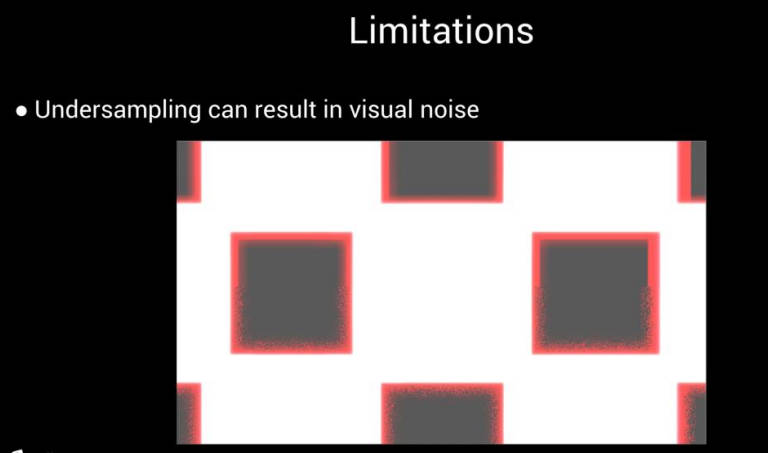
Subsurface 散射是将 subsurface lighting buffer 与 diffusion profile 卷积实现的。
diffusion profile 是重要采样的，而光照不是。因此，光照信号的欠采样可能会导致典型的随机噪声。在足够的照明下，通常不会出现可见的问题。然而，人工照明条件可能会引起问题。
例如，交替点亮和完全不点亮的简单棋盘格图案，在技术上来说这不是一个有限带宽的信号。
我们使用时间抗锯齿来减少噪声量。
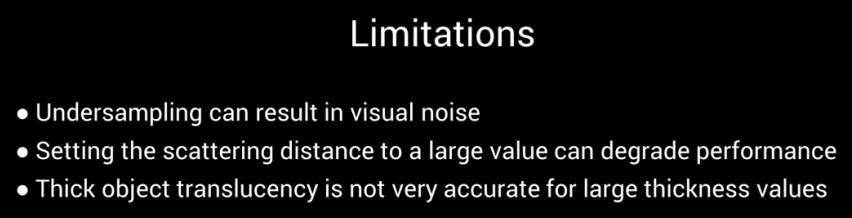
我们方法的另一个局限性是卷积核具有非常大的屏幕 footprint。样本最终相距很远，破坏纹理高速缓存，降低了性能。
最后，厚物体的半透明性做出了太多假设，无法为复杂厚物体产生准确的结果。
Future Work
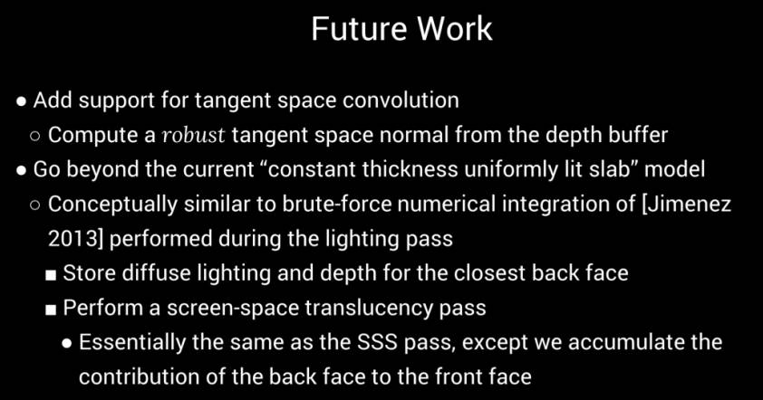
在未来，我们希望将我们的实现进行扩展，以支持切线空间积分。由于插值顶点法线在 G-Buffer 中不可用，我们的计划是从深度缓冲区计算健壮的(robust)切线空间法线。
对于半透明度，我们希望超越当前的“恒定厚度均匀照明板”模型。这需要对最近的背面进行 diffuse shading，并进行另一个屏幕空间 pass，将其与前面的 SSS 集成。
参考链接
- Cross Bilateral Filter http://techtidings.blogspot.com/2012/03/jointcross-bilateral-filter.html
Misc
Normal Map Mipmap
该文件展示了 normal map 的混合：
./SkinRendering/111_normal_map_lerp.ggb
- Normal Map Mipmap https://www.jianshu.com/p/efabea28ed1a
- Mipmapping_Normal_Maps https://developer.download.nvidia.com/whitepapers/2006/Mipmapping_Normal_Maps.pdf
- Spectacular-Specular-LEAN-and-CLEAN video https://www.gdcvault.com/play/1014557/Spectacular-Specular-LEAN-and-CLEAN
- Spectacular-Specular-LEAN-and-CLEAN ppt https://fdocuments.in/document/spectacular-specular-lean-and-clean-specular-highlights-dan-baker-firaxis.html
NoLWrap
下面文件展示了 nol wrap 的曲线：
./SkinRendering/111_nol_wrap.ggb
参考资料
- 《GPU Gems 3》：真实感皮肤渲染技术总结 https://zhuanlan.zhihu.com/p/42433792
- 低成本皮肤渲染 Pre-integrated Skin https://zhuanlan.zhihu.com/p/35628106
- Pre-Integrated Skin http://simonstechblog.blogspot.com/2015/02/pre-integrated-skin-shading.html
- separable-sss https://github.com/iryoku/separable-sss
- GPU Gem3 Advanced Techniques for Realistic Real-Time Skin Rendering
- GPU Pro 1 Screen-Space Subsurface Scattering
- GPU Pro 2 Part2 Chapter1 Pre-Integrated Skin Shading
- GPU Pro 5 Part4 Chapter1 Realistic Real-Time Skin Rendering on Mobile
- SoulShell：实时虚拟角色 https://zhuanlan.zhihu.com/soulshell
- 天刀渲染 https://zhuanlan.zhihu.com/p/295347623?utm_source=com.alibaba.android.rimet
- sss-intro https://therealmjp.github.io/posts/sss-intro/
- Exploring Character Art Workflows: Skin Texturing Tips https://80.lv/articles/exploring-character-art-workflows-skin-texturing-tips/